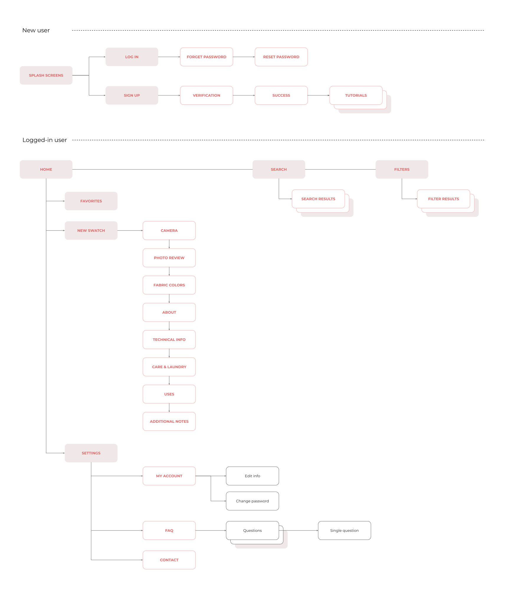

The idea for this app popped up in my mind at the right time. That was when I decided to start a UI/UX design career path and, at the same time, I also planned to spend some leisure time exploring the local fabric shops in Helsinki. The best of both worlds!
As for professional intention, by realizing the Fabric+ app design, I had a chance to get familiar with the design process. This way helps me eventually formulate a step-by-step workflow for other future design projects.
Here comes the concept of the Fabric+ app. Imagine with me, if you will, the Fabric+ app works similar to a self-made dictionary specially designed for learning textiles. Its target users consist of fashion design learners and amateur textile enthusiasts like me. These people can be beginners or at the mid-level in the field. They can be either self-taught or college students. Since they might have to consume a huge amount of knowledge and trends within a short time, they need a tool that is portable and effective.
With a smartphone along, Fabric+ users can build up gradual archives of different types of fabric on the app and quickly review them whenever they need.
Objective
This case study consists of creating a design for the Fabric+ app, a new branding style, and a new logo.
Since this Fabric+ app was my first personal project, I created a fictional character called Emily Ng based on my profile.
Sitemap

Wireframing
Visual style
I created the visual style for this Fabric+ app based on inspiration from a bullet journal.
A bullet journal usually serves the purpose of taking notes of something to memorize or to learn. Students also use highlighter pens or crayons with different colors to emphasize titles and keywords. This way helps them quickly skim through the long text and pick up the information they need.
UI Design
High-Fidelity Prototype
There are two versions of High-Fidelity Prototype for this Fabric+ app design. Each of them traces a sequence of actions a typical user might do.